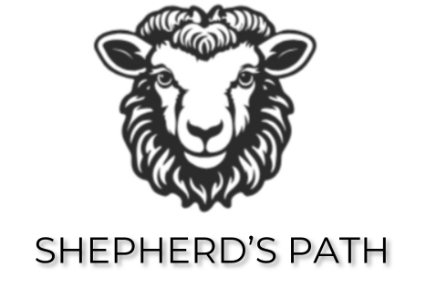

<header>
  <div class="logo">
    
  </div>
  <div class="menu-toggle">&#9776;</div>
  <nav>
    <ul>
      <li class="dropdown">
        <a href="Getting_Start/Home.html">Getting Started ▾</a>
        <ul class="dropdown-menu">
          <li><a href="Getting_Start/Basicsheep.html">Basic Sheep Information</a></li>
          <li>
            <a href="Getting_Start/SheepFarmingBeginner.html">Sheep Farming For Beginners</a>
          </li>
        </ul>
      </li>
      <li class="dropdown">
        <a href="Sheep-Breeds/SheepBreed.html">Sheep Breeds ▾</a>
        <ul class="dropdown-menu">
          <li><a href="Sheep-Breeds/Bannur.html">Bannur Breed</a></li>
          <li><a href="Sheep-Breeds/Deccani.html">Deccani Breed</a></li>
          <li><a href="Sheep-Breeds/Kenguri.html">Kenguri Breed</a></li>
          <li><a href="Sheep-Breeds/Bellary.html">Bellary Breed</a></li>
          <li><a href="Sheep-Breeds/Hassan.html">Hassan Breed</a></li>
          <li><a href="Sheep-Breeds/Yalaga.html">Yalaga Breed</a></li>
        </ul>
      </li>
      <li class="dropdown">
        <a href="Flock-Management/SheepShed.html">Flock Management ▾</a>
        <ul class="dropdown-menu">
          <li><a href="Flock-Management/SheepShed.html">Sheep Sheds</a></li>
          <li><a href="Flock-Management/Disease.html">Sheep Disease</a></li>
        </ul>
      </li>
      <a href="Sheep-Shop.html" class="shop-link">Shop</a>
    </ul>
  </nav>

</header>